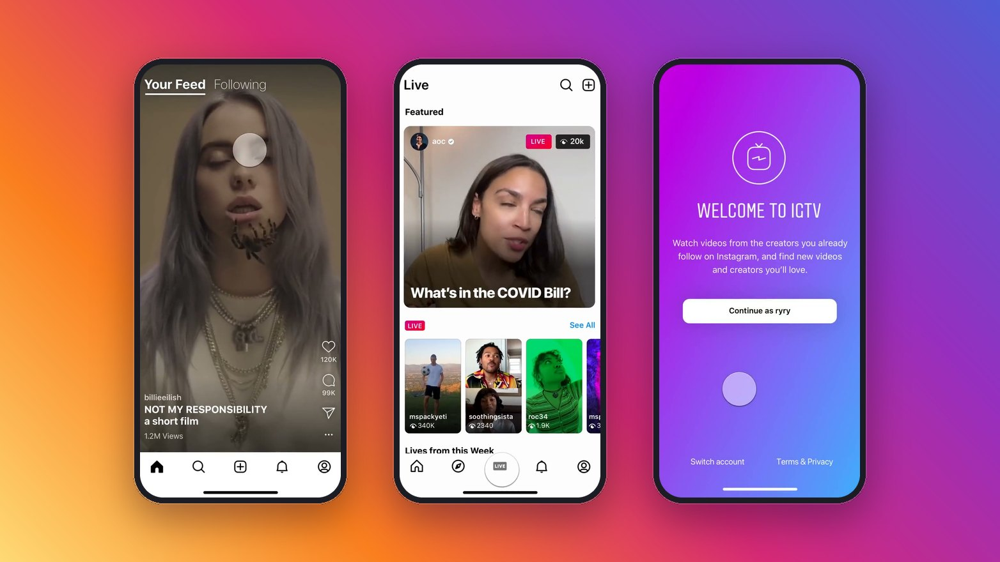
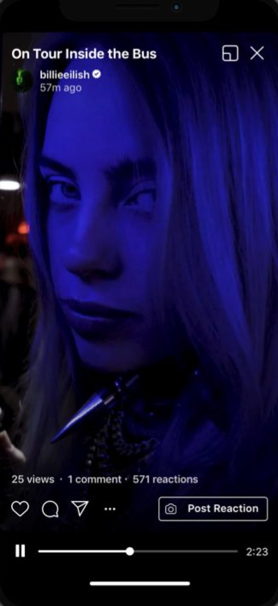
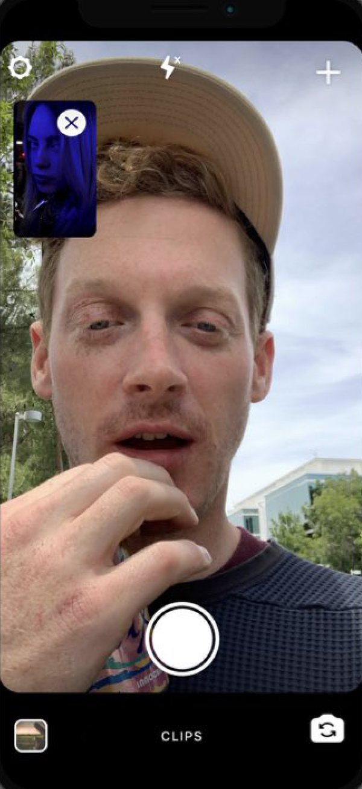
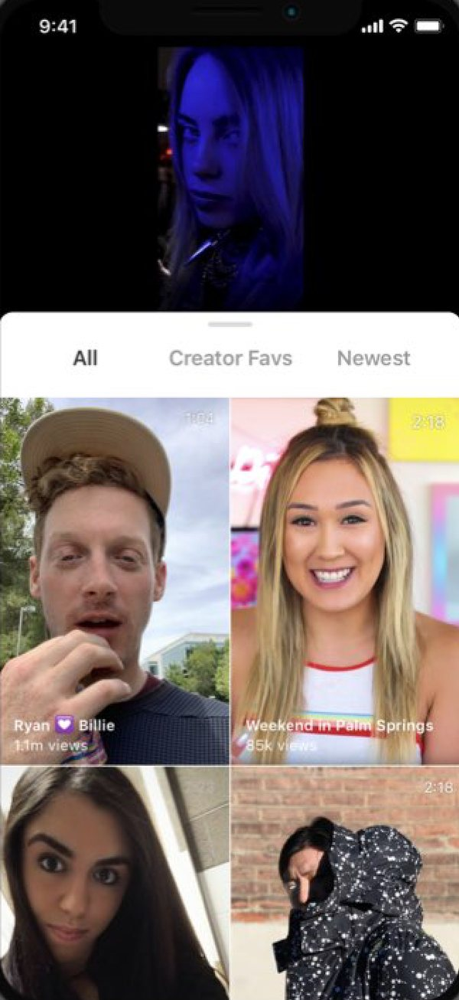

IGTV App
IGTV had a separate app that very few people knew about or used. People didn’t see a need to download a second app with the same features as the main one, yet a lot of long sessions and engagement were happening in IGTV.
The goal: differentiate the app from Instagram and make it a place where creators show off their content and expertise, build a dedicated space for fans to engage around video, and demonstrate a path to revenue models like tipping and subscriptions.
Partially shipped, later deprecated, but it laid the path for Reels in the Instagram app.

Abandoning the grid view for full screen, auto-playing videos. The following tab shows a quick view of top creators and new video indicators. This concept was merged into the main IG app and later became what is now the Reels tab.
There was no dedicated space for live videos in the main IG app, so I designed a version with a separate tab for live discovery. It was hugely popular during the rise in live broadcasts in 2020.
Exclusive content through subscriptions in a separate app was conceived to unlock new revenue streams, since Meta is so ad reliant. It would also help even small creators make a living.
Helping fans feel connected to creators was limited to comment sections on IG. Giving artists and creators richer content options, including scheduled lives, merch stores, and interactive polls.
A simple notifications step in onboarding made sure the creators people already follow were recommended, ranked by the creators who post videos most often.
Allowing fans to reply with their own videos eventually became one of the key features of the Reels content ecosystem.



Inform strategy, not outcomes
It was clear we should combine formats with Reels, but that took much longer to agree on and build. Aligning that strategy from the outset would have had better returns.
Minimum lovable product
Only a few great features were needed for retention, and making sure creators love the app leads to their fans loving it as well.
Use a separate app as a testing ground
We had more freedom to try things without the constraints and scrutiny of the larger app. Experimenting there and then moving features over was a valuable exercise.